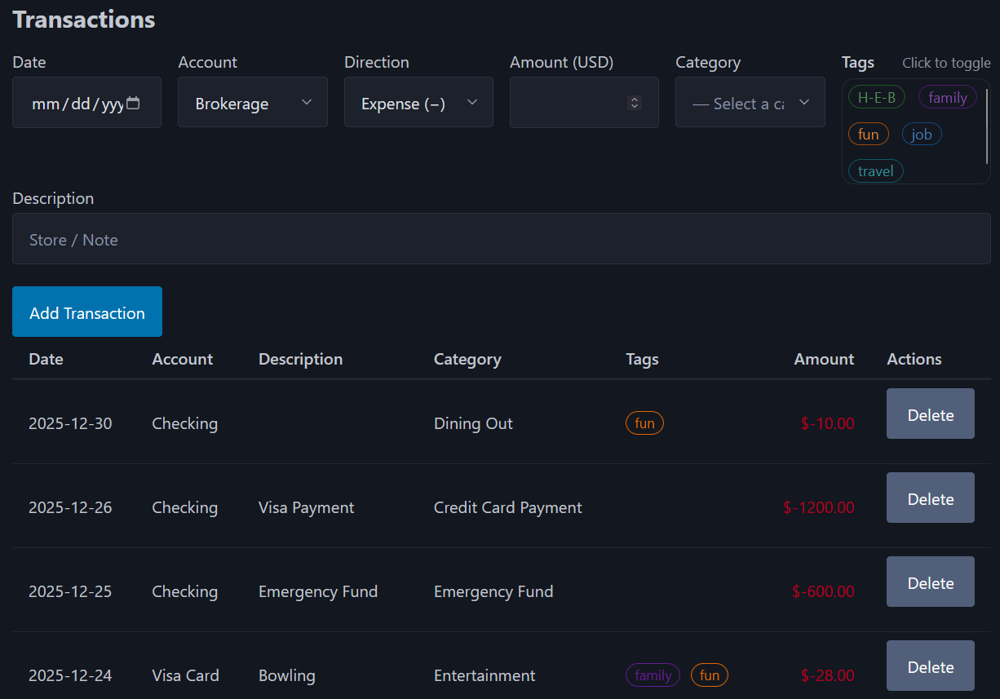
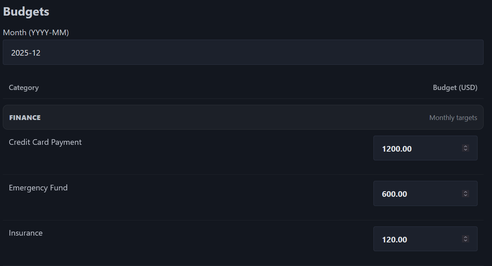
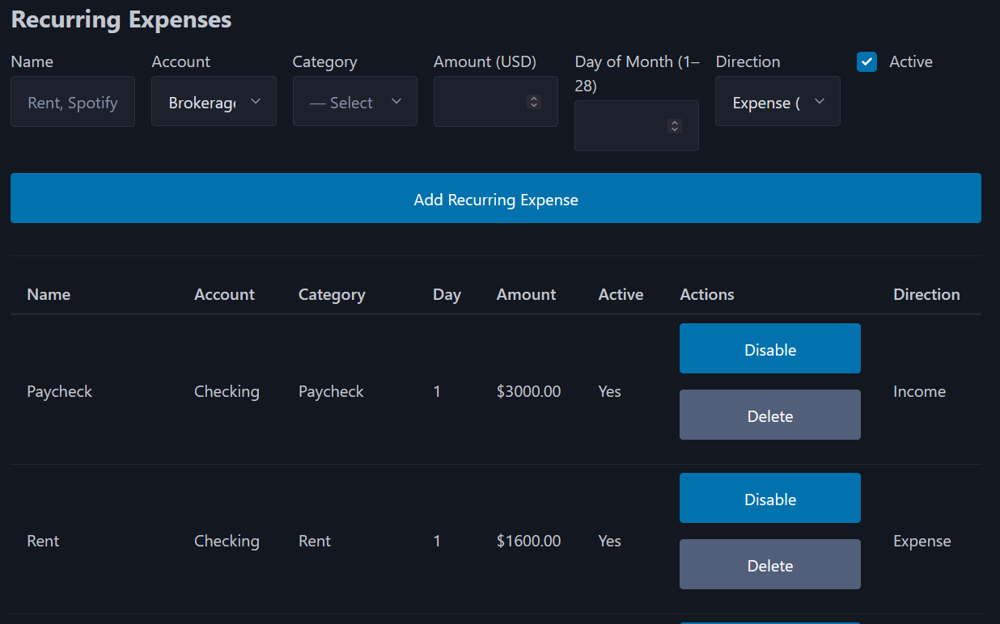
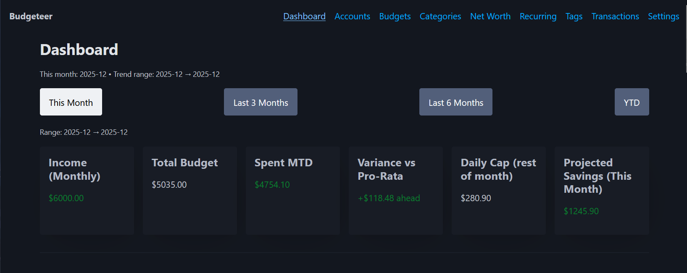
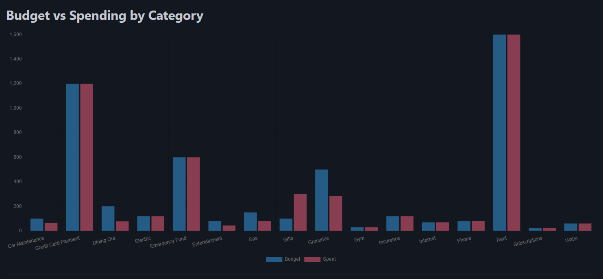
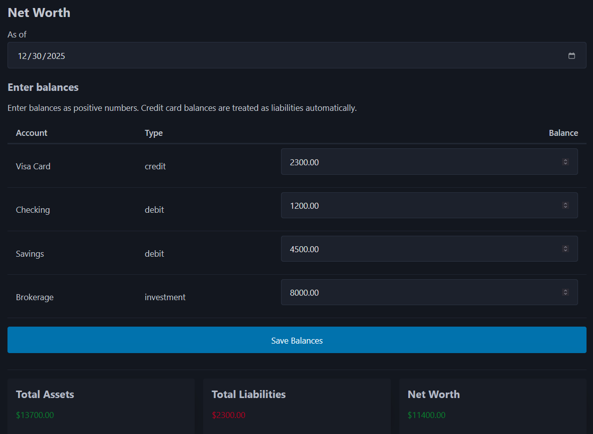

Budgeteer is a personal finance web application designed to make monthly budgeting actionable rather than retrospective. It allows users to track income and expenses, assign monthly budgets, automate recurring transactions, and view real-time dashboard insights such as spending pace, daily spending caps, projected savings, and net worth trends.
The project emphasizes correct financial modeling and clear decision-making metrics, prioritizing accuracy and usability over unnecessary complexity.

YYYY-MM).



Together, these metrics turn raw transaction data into daily spending guidance, not just historical reporting.
Net worth is tracked using balance snapshots (stock) rather than being derived from transactions (flow), avoiding the need for full bank reconciliation logic while maintaining accuracy.

Backend: Python, Flask, SQLite
Frontend: HTML, CSS, Bootstrap, Jinja2
Charts: Chart.js
This project demonstrates full-stack development with a focus on data correctness and practical analytics. Budgeteer isn’t just CRUD it includes the kind of logic that matters in real products: schema design, aggregation queries, time-based calculations, and dashboards that help users make better day-to-day decisions.
If I continue iterating, the next additions would be CSV import, account transfers, and exportable reports but the foundation (clean modeling + clear insights) is already in place.
Whether you'd like to collaborate, have a question, or just want to say hello — I’d love to hear from you!